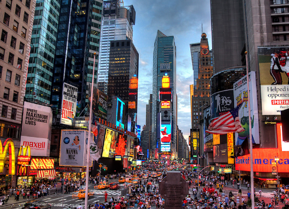

Unitied States of America

As one of the largest and most diverse countries in the world, The United States boast an amazing amount of tourist destinations ranging from the skyscrapers of New York and Chicago, the natural wonders of Yellowstone and Alaska to the sunny beaches of California, Florida and Hawaii. With so many tourist attractions in the USA it's tempting to list entire cities or even states, but in this top 25 I have tried to focus on specific attractions. Times SquareTimes Square (nicknamed "The Crossroads of the World") is the best known square in New York City and also its beating heart. It got its name in 1904 and it was named after the New York Times which moved the headquarters there. It comes into focus mainly during the New Year's Eve celebrations which are traditionally held at Times Square (the tradition dating back to 1903) and covered by the ABC programme: Dick Clark's New Year's Rockin' Eve. The highlight of the evening is the famous ball dropping during which the huge ball descents about half a meter. The tradition of counting down the last seconds of the year while watching the huge ball slowly go down dates back to 1907. The moment it drops completely, the New Year starts. Times Square is also known for its neon signs. The NASDAQ sign at Times Square is the world's largest LED sign. Also, there are many brand shops, cafes and restaurants. The square also appeared in many films. Among the most famous ones are Vanilla Sky, Enchanted, Spider-Man 3 or New Year's Eve. Times Square is usually crowded with tourists. Note that since 2011, the square is smoke free.
|